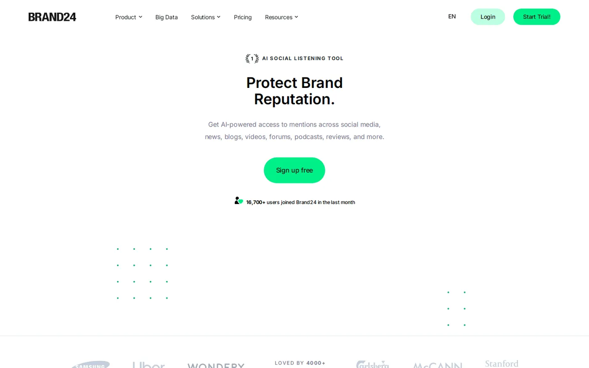
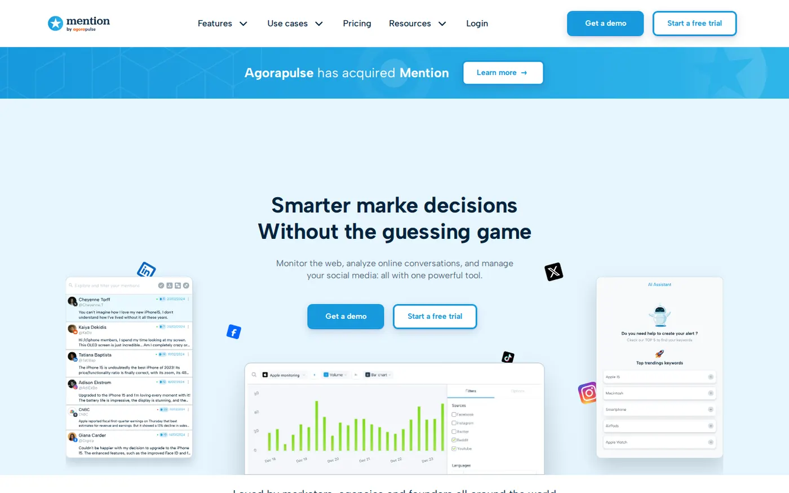
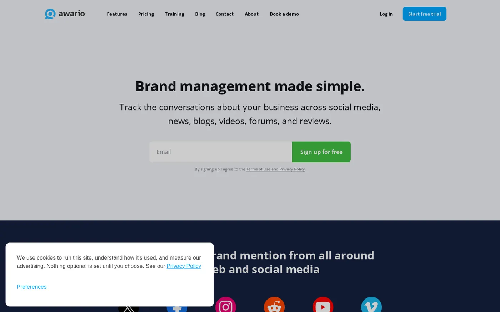
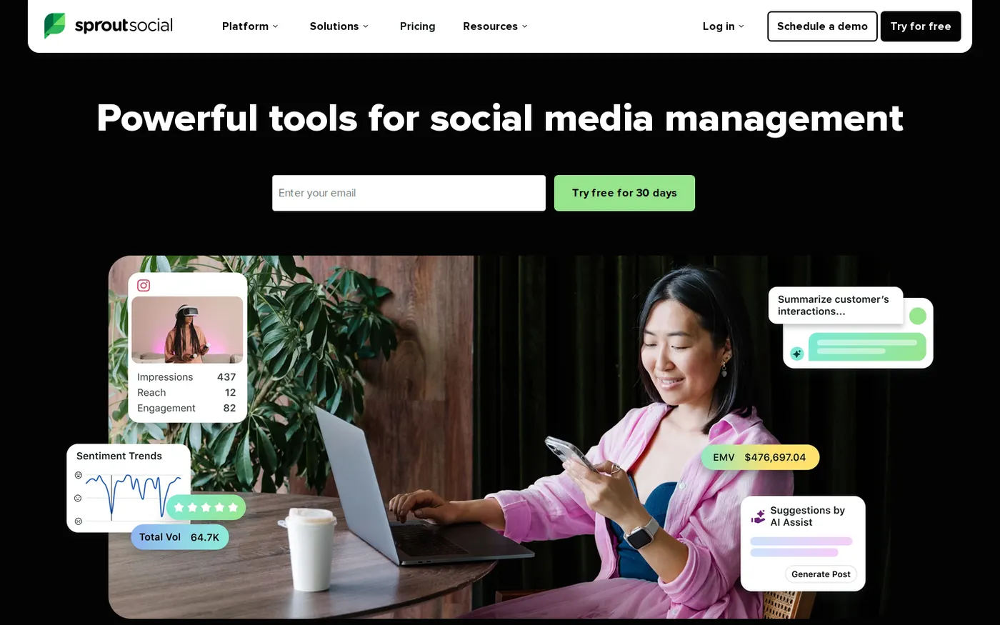
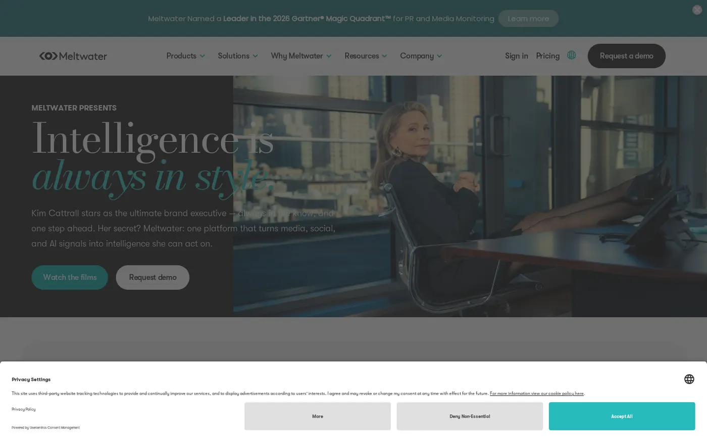
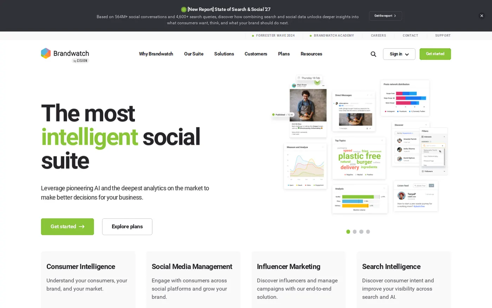
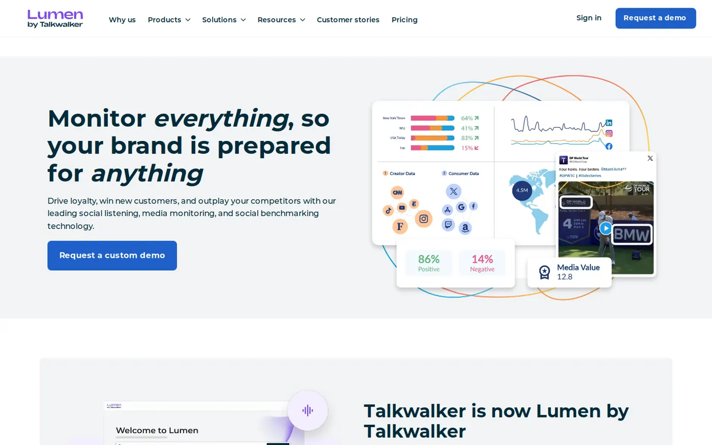
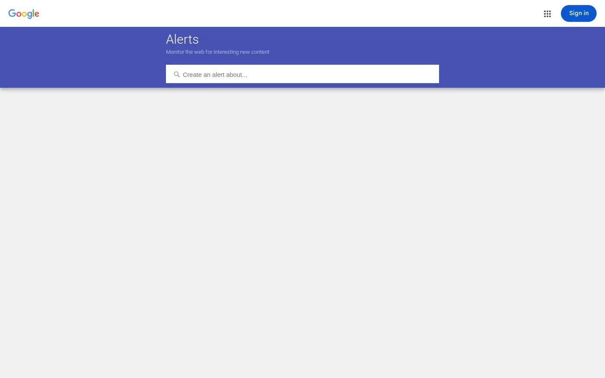
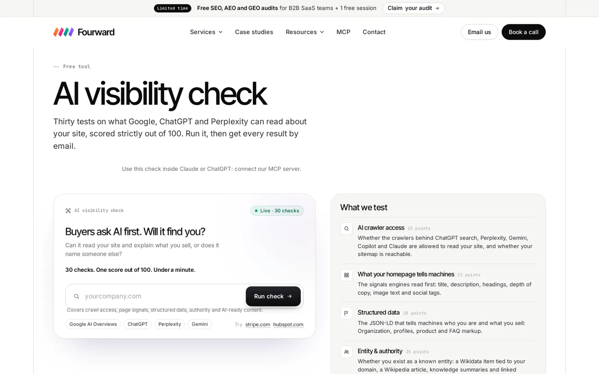

On this page
For most SaaS teams, the best tools for brand reputation monitoring in 2026 are Brand24, Mention and Awario. Large PR teams should look at Meltwater, Brandwatch or Talkwalker. Google Alerts is the free place to start.
Below I compare nine tools on four things: the sources they cover, how they alert you, whether they track review sites and what they cost.
I work at Fourward, which publishes this guide. One entry is ours: the free AI visibility check, listed last. Every other fact links to that company's own website, checked on 8 November 2026. No vendor paid to be included.
- A brand reputation monitoring tool is software that finds what people write about your brand online, in news, social posts, forums and reviews, and alerts you when it appears.
- Of the tools that publish prices, Awario starts lowest at $29 a month billed yearly. Brand24 starts at $199 a month billed yearly. Meltwater, Brandwatch and Talkwalker quote custom prices.
- Mention and Brand24 list review sites as a source on their pricing pages. Neither names G2 or Capterra, so ask before you buy.
- Reputation now also includes what AI chatbots say about you. For that, see our guide to the best AI visibility tools.
What a brand reputation monitoring tool does
A monitoring tool watches the web for words you choose, such as your brand name, product names and your founder's name. When one of them appears, the tool saves the mention and can alert you.
Most tools do the same four jobs:
- Collect mentionsPosts, articles, comments and reviews that name your brand, gathered in one feed.
- Score sentimentSentiment analysis means the tool guesses whether each mention is positive, negative or neutral.
- Alert youEmail, app or Slack messages when new mentions appear, so a complaint gets a reply the same day.
- Report trendsCharts of mention volume and sentiment over time, often next to your competitors.
For a SaaS company, the mentions that matter most are usually reviews, Reddit threads, LinkedIn posts and articles that compare you with rivals.
Decide which sources your buyers read before you compare tools. Coverage matters more than the number of charts.
How I picked them
I started from the tools that come up most when SaaS teams search for brand monitoring. For each one, I read its own pricing and product pages on 8 November 2026 and noted four things:
- The sources it says it covers.
- The alert options it lists.
- Whether it names review sites as a source.
- The entry price, if one is published.
I didn't create accounts or run tests, so nothing here claims hands-on results. The order puts self-serve tools with free trials first and sales-led tools after them.
The best brand reputation monitoring tools at a glance
The same five facts for every tool, from each vendor's own site. Scroll the table sideways on a phone.
| Tool | Best for | Coverage named on its site | Review sites | Starts at |
|---|---|---|---|---|
| Brand24 | Most SaaS teams | News, blogs, social, Reddit, podcasts, newsletters | Listed as a source | $199/mo billed yearly |
| Mention | Review-heavy brands | Social, news, blogs, forums | 75+ review sites | One Company plan, price not shown |
| Awario | Small budgets | Brand mentions online | Not listed | $29/mo billed yearly |
| Sprout Social | Social teams | Social profiles, Listening as an add-on | Review management on Standard | $79 per seat/mo |
| Meltwater | PR teams | Online news, social, print, broadcast, podcasts | Not listed | Tailored quote |
| Brandwatch | Consumer research | Major social networks | Not listed | Demo, no prices shown |
| Talkwalker | Global brands | 150 million sources, 187 languages | Not listed | Custom quote |
| Google Alerts | A free baseline | New Google Search results | No | Free |
| Fourward AI visibility check | What AI engines can read | Your own site | No | Free |
1. Brand24
Best for SaaS teams that want wide coverage, fast alerts and a published price.

Brand24 tracks the keywords you set across social networks, news, blogs, podcasts and newsletters. Brand24 describes its entry plan as "Ideal for tracking a small brand", with 3 keywords and 2,000 mentions a month.
- CoverageNews, blogs, Reddit, LinkedIn, YouTube, TikTok, Quora, Medium, reviews, newsletters and podcasts, plus Facebook, Instagram and X.
- AlertsAlerts it calls Storm Alerts, mobile push notifications, custom emails, and Slack and Microsoft Teams integrations.
- PricingIndividual $199 a month billed yearly, or $249 monthly. Team $299, Pro $399 and Business $599 billed yearly. Enterprise from $1,499. Pricing page
- Free optionA free 14-day trial.
My take The safest first pick for a SaaS team. Three keywords is tight, so check whether your brand, product and founder names fit before you choose a plan.
2. Mention
Best for Brands whose reputation lives on review sites as much as on social media.

Mention's widest claim is on reviews. Its pricing page lists "75+ review sites including Google, Facebook, Trustpilot, Amazon, and Glassdoor and more".
- CoverageFacebook, Instagram, X, Reddit, TikTok, Pinterest and YouTube, plus news, blogs and forums.
- AlertsAn alert is a keyword or set of keywords that Mention crawls the web and social media for.
- PricingOne Company plan, with 2 months free on yearly billing. The amount did not show in the page text when I checked. Pricing page
- Free optionA free trial, with no length stated on the pricing page.
My take The strongest review coverage on paper. With only one plan, ask for the price and your limits before a demo takes up your week.
3. Awario
Best for Solo marketers and early-stage startups that need the lowest published price.

Awario's pricing page sums up the product as "Monitor relevant mentions of your brand or product online." An alert in Awario is a keyword or set of keywords it watches for you.
- CoverageMentions of your brand or product online. The pricing page doesn't list review sites.
- AlertsThe trial gives Starter access, with up to 3 alerts and 30,000 mentions.
- PricingStarter $29 a month billed yearly, or $49 monthly. Pro $89 or $149. Enterprise $249 or $399. Yearly billing saves up to 40%. Pricing page
- Free optionA free trial of the Starter plan.
My take The cheapest paid tool here. If reviews matter to your sales, confirm review coverage first, because the pricing page doesn't mention it.
4. Sprout Social
Best for Social media teams that already publish from Sprout and want listening in the same place.

Sprout Social is a social media tool for teams that manage profiles across networks. Monitoring beyond your own profiles comes from its Listening add-on.
- CoverageYour social profiles. Listening is an individual add-on to the Standard plan and up.
- Review sitesReview management is listed as a Standard plan feature.
- PricingEssentials $79 per seat a month, or $99 billed monthly. Standard is listed at $199 per seat a month. Listening has no published price. Pricing page
- Free optionA 30-day free trial.
My take A good fit only if your team already works in Sprout. Per-seat pricing plus an add-on adds up quickly for a team of five.
Free check. 30 checks, one score out of 100, under a minute.
5. Meltwater
Best for PR and communications teams that need press, broadcast and podcast coverage.

Meltwater promises "the complete picture across online news, social media, print, broadcast, and podcast". That makes it one of the few tools here built around traditional media.
- CoverageOnline news, social media, print, broadcast and podcasts.
- Alerts"Alerts & reporting" is a key feature of the Starter plan.
- PricingTailored pricing across Starter, Pro, Enterprise and Agency plans, based partly on the sources and regions you monitor. Pricing page
- Review sitesNot mentioned on the pages I checked.
My take Worth the sales call if press coverage drives your reputation. For a SaaS team that mostly cares about reviews and Reddit, it is more than you need.
6. Brandwatch
Best for Larger brands that want consumer research across social media, not just alerts.

Brandwatch sells several products, including Consumer Intelligence, Social Media Management and Media Intelligence & Insights. Consumer Intelligence is the one built for listening and research.
- CoverageSocial networks, named as "Facebook, Instagram, YouTube, Twitter, LinkedIn, the list goes on".
- AlertsFlexible, automated reporting and alerts that you can share across the business.
- PricingNo prices shown. It offers standard to enterprise plans for each product, through a demo. Pricing page
- Review sitesNot mentioned on the pricing page.
My take Built for research teams that study a market, not for a founder who wants to catch one bad review. Start smaller unless you have an analyst.
7. Talkwalker
Best for Global brands that need coverage across many countries and languages.

Talkwalker's pricing page cites 150 million data sources, more than 30 social platforms, 187 languages and 196 countries. Every plan is quoted separately.
- Coverage150 million data sources and 30+ social platforms, in 187 languages.
- AlertsThe Core plan includes custom dashboards, reports and alerts.
- PricingCore, Analyze and Business plans, each with a custom quote. Pricing page
- Review sitesNot mentioned on the pricing page.
My take The pick when you sell in many languages. For a SaaS company selling mostly in English, the extra reach may not be worth the quote.
8. Google Alerts
Best for Any team that wants a free baseline before paying for a tool.

Google's help page puts it simply: "You can get emails when new results for a topic show up in Google Search." You choose how often you get notifications and which types of sites you see.
- CoverageNew results in Google Search, from the types of sites you choose.
- AlertsEmail, at the frequency you choose. Google's help page
- PricingFree.
My take Set it up today for your brand and product names. It only watches Google Search results, so treat it as a floor, not a full tool.
9. Fourward AI visibility check
Best for Seeing what AI engines can read about your site before they describe you to buyers.

Buyers can now ask ChatGPT or Perplexity about your product. The answer shapes your reputation, and none of the tools above was picked for checking it.
I built Fourward's free AI visibility check. It runs 30 checks on what AI engines can read about a site. Fourward also has a free AI crawler checker that tests 20 AI crawlers, your robots.txt file and your firewall.
- CoverageYour own site, as AI engines see it.
- AlertsNone. It is a one-off check, not ongoing monitoring.
- PricingFree.
My take Use it next to a monitoring tool, not instead of one. To track AI answers over time, compare the AI visibility tools in our other guide, and read how to get cited by ChatGPT.
What brand reputation monitoring tools cost
Entry plans as published on 8 November 2026, in US dollars. Yearly prices are shown as a monthly rate.
| Tool | Entry plan | Billed yearly | Billed monthly | Free trial |
|---|---|---|---|---|
| Google Alerts | Free | Free | Free | Not needed |
| Awario | Starter | $29 | $49 | Yes |
| Sprout Social | Essentials, no Listening | $79 per seat | $99 per seat | 30 days |
| Brand24 | Individual | $199 | $249 | 14 days |
| Mention | Company | Not shown | Not shown | Yes |
| Meltwater | Starter | Tailored quote | Tailored quote | Not stated |
| Brandwatch | Standard | Demo | Demo | Not stated |
| Talkwalker | Core | Custom quote | Custom quote | Not stated |
The entry price rarely tells the full story. Brand24 and Awario limit keywords, alerts and mentions, so a busy brand outgrows the entry plan fast. Sprout Social charges per seat, and its Listening add-on costs extra.
Count your keywords and the people who need access before you compare prices. Those two numbers decide which plan you really need.
How to choose a brand reputation monitoring tool
Start with where your buyers talk about you, then match that to the tool's coverage and your budget.
| Your situation | Start with | Why |
|---|---|---|
| You have no budget yet | Google Alerts | Free email alerts on new Google results |
| You want one tool with clear prices | Brand24 | Wide sources, Slack alerts, 14-day trial |
| Reviews drive your sales | Mention | 75+ review sites listed |
| You need the lowest paid price | Awario | From $29 a month billed yearly |
| Your social team works in Sprout | Sprout Social with Listening | Review management on Standard |
| Press and podcasts matter most | Meltwater | News, print, broadcast and podcasts |
| You sell in many languages | Talkwalker | 187 languages and 196 countries |
| You research your market on social | Brandwatch | Consumer Intelligence with automated alerts |
Mistakes to avoid
Most monitoring setups fail for simple reasons, not because the tool was wrong.
- Tracking only your brand name. Add product names, founder names, common misspellings and your top competitors.
- Alerting on everything. Send only negative or unusual mentions to Slack, or your team will start ignoring the channel.
- Assuming review sites are covered. Ask the vendor whether G2, Capterra and Trustpilot are included, by name.
- Watching without acting. Give one person the job of replying to complaints within a day.
- Ignoring what earns mentions. If monitoring shows few articles about you, our guide to the best digital PR agencies compares firms that earn press coverage.
A full SEO, AEO and GEO audit, plus 30 minutes with our team to walk you through it.
FAQs
What is the best tool for brand reputation monitoring?
For most SaaS teams, Brand24 is the best all-round pick, with wide sources, Slack alerts and published prices. Mention is stronger on review sites. Large PR teams should compare Meltwater, Brandwatch and Talkwalker.
How much does brand reputation monitoring software cost?
Published entry prices run from $29 a month for Awario, billed yearly, to $199 a month for Brand24, billed yearly. Meltwater, Brandwatch and Talkwalker quote custom prices, and Google Alerts is free.
Is there a free brand monitoring tool?
Google Alerts is free and emails you when new Google results mention your brand. Brand24 has a 14-day free trial, Sprout Social a 30-day trial, and Awario and Mention offer trials too.
Do these tools track G2 and Capterra reviews?
Mention lists more than 75 review sites, including Google, Trustpilot, Amazon and Glassdoor, and Brand24 lists reviews as a source. Neither pricing page names G2 or Capterra, so ask the vendor before you buy.
What is the difference between brand monitoring and social listening?
Brand monitoring tracks mentions of your own brand so you can respond. Social listening studies wider conversations about your market to spot trends. Some tools sell listening separately, such as Sprout Social's Listening add-on.
Should I monitor what AI chatbots say about my brand?
Yes, because buyers can ask ChatGPT or Perplexity about your product. An AI visibility tool tracks those answers over time, and Fourward's free AI visibility check shows what AI engines can read about your site.
Sources
- Pricing and Plans | Brand24, Brand24 Global Inc., checked 8 November 2026.
- Pricing | Mention, Mention, checked 8 November 2026.
- Pick your Awario plan | Awario, Awario, checked 8 November 2026.
- Sprout Social Pricing, Sprout Social, Inc., checked 8 November 2026.
- Meltwater Pricing & Costs and media intelligence, Meltwater, checked 8 November 2026.
- Pricing & Plans for Every Team | Brandwatch, Brandwatch, checked 8 November 2026.
- Pick your plan to get a custom quote, Talkwalker, checked 8 November 2026.
- Create an alert, Google Search Help, Google, checked 8 November 2026.